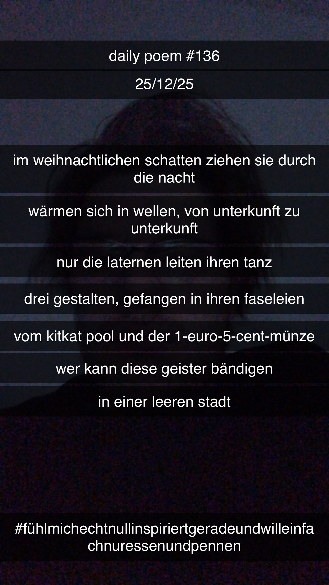

Ein Weihnachts-Walk mit den Boys
[136]Im weihnachtlichen Schatten ziehen sie durch die Nacht
Wärmen sich in Wellen, von Unterkunft zu Unterkunft
Nur die Laternen leiten ihren Tanz
Drei Gestalten, gefangen in ihren Faseleien
Vom KitKat-Pool und der 1-Euro-5-Cent-Münze
Wer kann diese Geister bändigen
In einer leeren Stadt
